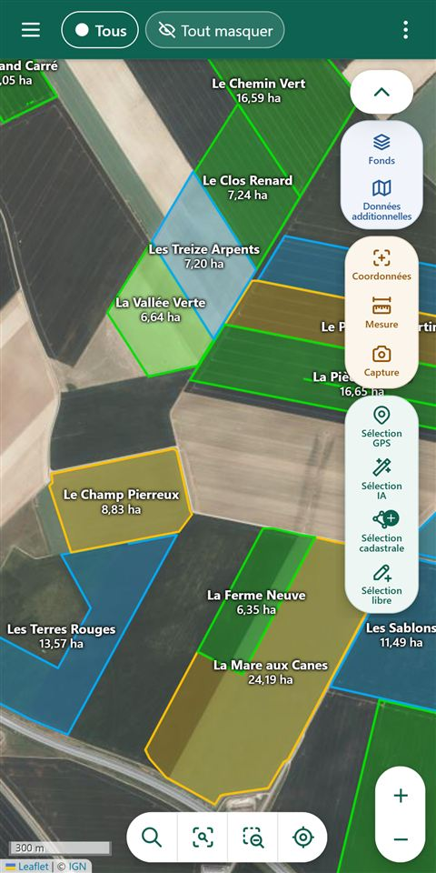
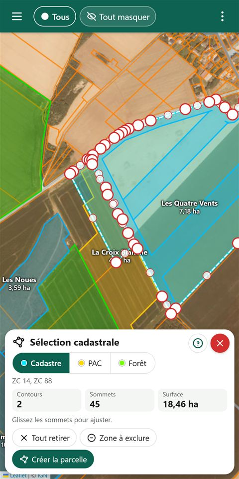
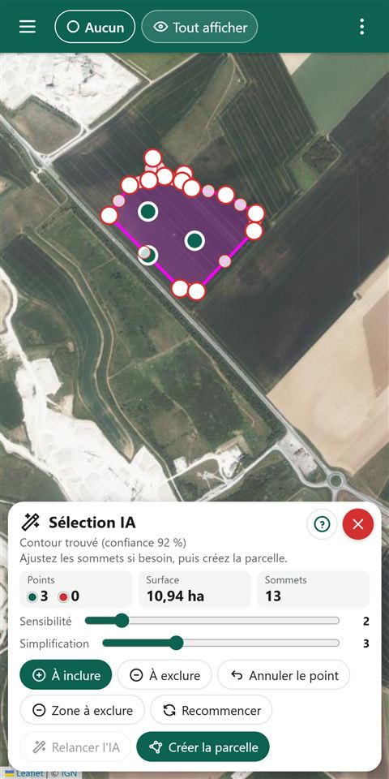
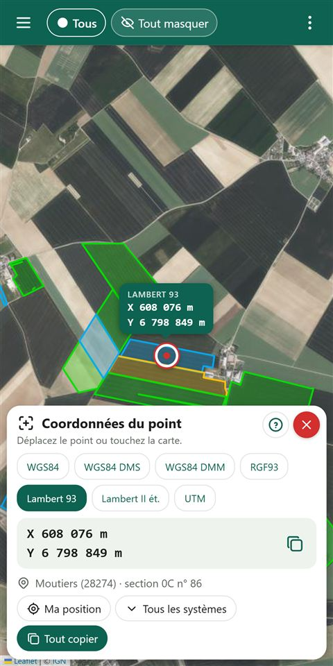
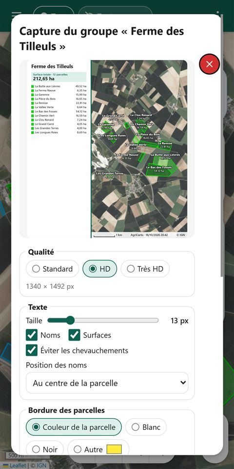
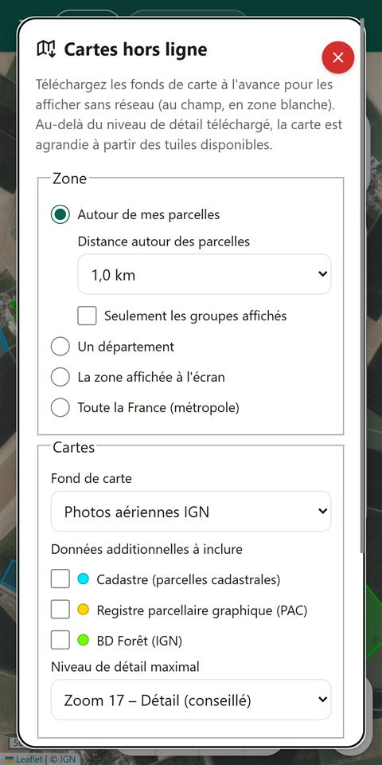

Ce que fait AgriCarto
Toutes vos parcelles
Rangées par groupes, avec étiquettes, couleurs, surfaces et périmètres. Recherche et tri en un geste.
Cadastre, PAC et forêt
Affichez les contours officiels et créez une parcelle en touchant les parcelles cadastrales ou déclarées.
Détection automatique
Touchez l'intérieur d'un champ sur la photo aérienne : le contour est proposé, à ajuster si besoin.
Tour de parcelle au GPS
Faites le tour du champ, téléphone en poche : la trace devient le contour de la parcelle.
Coordonnées et référence cadastrale
Lambert 93, WGS84, UTM… et la référence cadastrale du point, utiles pour une déclaration de dégâts ou un sinistre.
Cartes hors ligne
Téléchargez à l'avance les fonds de carte autour de vos parcelles, d'un département ou de toute la France.
Captures à partager
Une carte propre de vos parcelles ou d'un groupe, avec titre, surfaces et légende, prête à envoyer.
Sauvegardes et synchronisation
Sauvegardes automatiques sur le téléphone et synchronisation entre vos appareils via votre propre espace Drive.
Pensée pour le terrain
Mode plein soleil, grands boutons, loupe de précision, confirmations avant toute suppression.
Aperçu






Captures réalisées avec des données de démonstration. Fonds de carte © IGN.
Vos données restent chez vous
Pas de compte, pas de publicité, pas de traceur. Vos parcelles sont enregistrées sur votre téléphone ; elles ne sont copiées ailleurs que si vous le décidez (export, synchronisation vers votre propre Drive). La détection automatique fonctionne sur l'appareil, sans envoyer d'image.
Un problème, une idée ?
Signaler un problème Proposer une amélioration
Un compte GitHub (gratuit) est nécessaire pour écrire un message. Merci d'indiquer la version de l'appli (menu ⋮ › À propos) et votre modèle de téléphone.